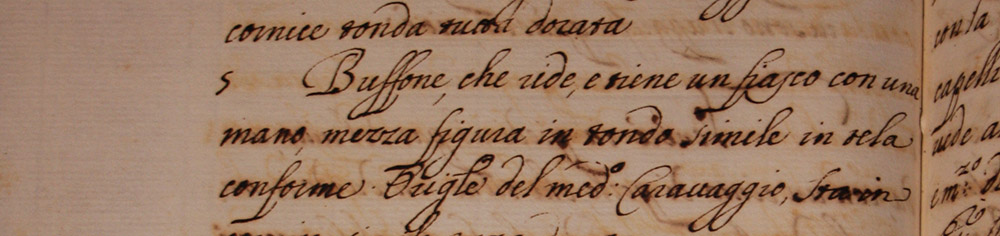
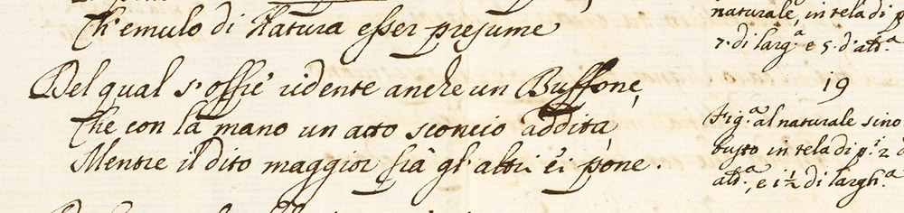
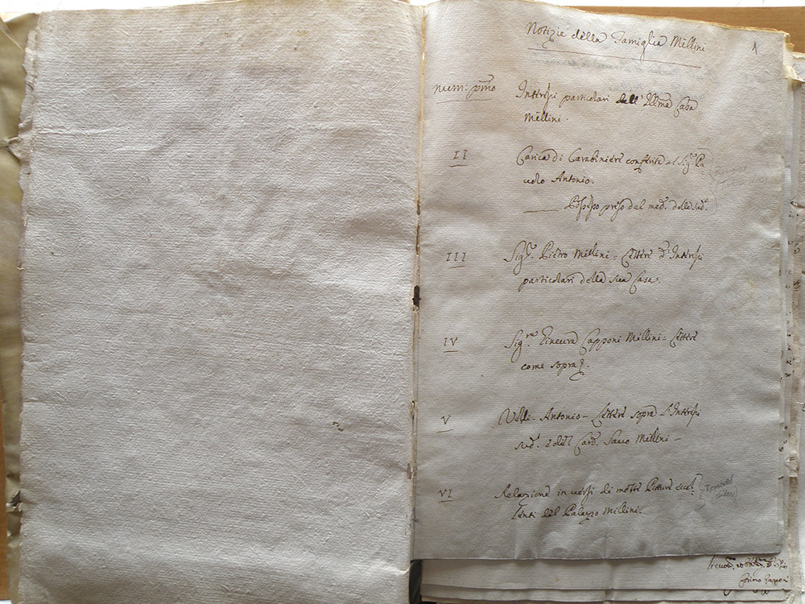
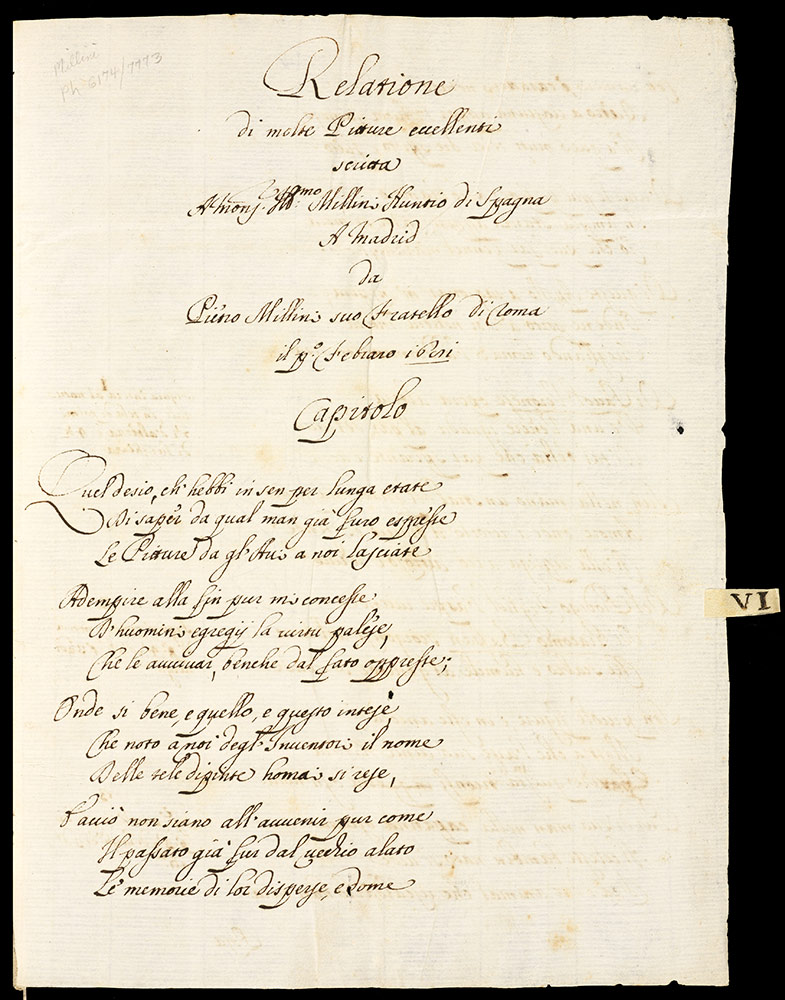

Essays
Provenance of the Mellini Manuscript
The poetic inventory by Pietro Mellini dated 1681 is difficult to understand if we consider it as a single item preserved in the Getty Research Institute’s Special Collections, where it seems to be an isolated fragment disconnected from its historical and cultural context. The question arises: How did this manuscript, separated from other related documents, end up in Los Angeles?
There is no reason to doubt that the poem was composed in the Mellini household in Rome, from where it was destined to travel to Madrid. The similarity between the handwriting in the poem dated 1681 and the traditional inventory dated 16801 (currently preserved in the Serlupi Crescenzi archive in Rome) suggests that the two texts may have been written by the same copyist or professional scribe, probably hired by Pietro Mellini (figs. 1, 2).2
|  Fig. 1. Example of the handwriting found in the traditional inventory of 1680 in the Serlupi Crescenzi archive. From Scritture diverse della Casa Millini (1674–1696), X, fols. 164r–196r. Rome, Archivio Serlupi Crescenzi |
|
 Fig. 2. Example of the handwriting found in the 1681 verse inventory (the writing here and in figure 1 is probably that of a scribe hired by Pietro Mellini). From Pietro Mellini, “Relatione delle pitture migliori di casa Melini [sic] inviata à Madrid in versi,” 1681, fol. 2v. Los Angeles, Getty Research Institute (860066) |
{kind=link}
{kind=link}
That the manuscript now at the Getty Research Institute was sent to Madrid and kept by Savo Mellini among his papers is confirmed by the fact that it was part of volume II of the Savo Mellini archive (preserved in the library of the Fundación Bartolomé March in Palma de Mallorca, Spain) before it was removed. Volume II of the Savo Mellini archive, in Palma de Mallorca, contains personal documents that belonged to Savo, as indicated on the spine (“Millini interessi” [“Millini interests”]) and in the index (“Notizie della famiglia Millini” [“Information on the Mellini family”]). There are letters from Pietro; from Savo and Pietro’s mother, Ginevra Cibo; and from the family’s secretary in Rome, Antonio Velli. All are marked “about the illustrious Family’s particular interests.”
The poem dated 1681 was originally among these papers, as indicated in the index to the volume (fig. 3). Under section VI of the index, we read “Relazione in versi di molte Pitture eccellenti del Palazzo Mellini” (“Account in verse of many excellent Paintings in the Mellini Palace”); to the right is a notation written in pencil, in English: “Removed,” with another illegible word in parentheses.

Fig. 3. Index to volume II of the Savo Mellini archive in the Fundación Bartolomé March. Palma de Mallorca, Spain, Fundación Bartolomé March, Papeles Savo Millini, vol. 15, Signatura B81-D-08, fol. 1r
{kind=link}
Fig. 3. Index to volume II of the Savo Mellini archive in the Fundación Bartolomé March. Palma de Mallorca, Spain, Fundación Bartolomé March, Papeles Savo Millini, vol. 15, Signatura B81-D-08, fol. 1r

Fig. 4. The 1681 manuscript at the Getty Research Institute, bearing the original tab for section VI of volume II of the archive of Savo Mellini’s papers. From Pietro Mellini, “Relatione delle pitture migliori di casa Melini [sic] inviata à Madrid in versi,” 1681, fol. 1r. Los Angeles, Getty Research Institute (860066)
{kind=link}
Fig. 4. The 1681 manuscript at the Getty Research Institute, bearing the original tab for section VI of volume II of the archive of Savo Mellini’s papers. From Pietro Mellini, “Relatione delle pitture migliori di casa Melini [sic] inviata à Madrid in versi,” 1681, fol. 1r. Los Angeles, Getty Research Institute (860066)
Thus it seems evident that Pietro’s poem was taken out of volume II of Savo’s papers at some point—the annotation says “removed,” not “missing.” Curiously, whoever extracted the document also took the tab for that section (VI) of the volume; the tab is still attached to the first page of the manuscript in the Getty Research Institute’s Special Collections (fig. 4). The fact that Pietro’s poem was originally among his brother Savo’s papers helps us to understand its significance. Clearly, Savo considered it to be a document of a private nature, relating to the family’s affairs in Rome.
According to the acquisition record at the Getty Research Institute (no. 860066), the document was purchased in 1986 from the New York bookdealer
H. P. Kraus3 as part of a group of documents belonging to the vast collection assembled by Sir Thomas Phillips4. In 1978 Kraus had purchased from the Rudson Trust what was left of the Phillips collection. The collection of manuscripts relating to Savo Mellini owned by Phillips came, in turn, from the collection of
Lord Guilford5, which Phillips purchased in 1830. The inventory number that appears, written in pencil in the upper left-hand corner of the recto of the first folio of the 1681 manuscript, is “Millini. Ph 6174/7773.”
This reference correlates with the numbers that appear on the spine (“6174/7773”) and on the first sheet (“Mellini Family 6174/7773”) in the volume at the Fundación Bartolomé March. At the end of the volume, written by hand in pencil, is the notation “Kraus 6174/7773.” Thus we know that Lord Guilford and Phillips owned the manuscript while it was still contained in volume II of Savo’s papers; later the archive passed to Kraus, who sold the volume and the manuscript of Pietro’s poem separately—the poem went to the Getty Research Institute and the volume went to the Fundación Bartolomé March.
It is improbable that the manuscript was fortuitously separated from the rest of Savo’s papers. When and why Pietro Mellini’s poem was removed from his brother’s papers is still a mystery. One plausible hypothesis is that Kraus himself removed it from volume II of Savo Mellini’s papers during the process of classification, reordering, and formation of lots for sale, believing that this particular document had a unique value that made it sellable as a separate item.
Consequently, the history of this manuscript offers an excellent example of how the building of modern archives is also the story of the progressive reshaping of history according to the social and financial practices associated with collecting, bibliophilia, the book and manuscript market, and institutional interests.
Footnotes
- 1. See the essay “Comparison between the 1680 and 1681 Mellini Inventories.”
- 2.Around the middle of the eighteenth century, the surname Mellini died out, as there were no more male descendants. The family divided into two branches created by the marriages of Pietro Mellini’s two granddaughters: the Falconieri and Serlupi families. This explains why the private archive of the Mellini family is currently in the possession of the Marquis Serlupi Crescenzi in Rome.
- 3. The Austrian-born Hans Peter Kraus (1907–1988) was the leading rare-book dealer of the second half of the twentieth century; he continued his business in New York after the outbreak of World War II.
- 4. Thomas Phillips (1792–1872) was an English antiquarian and book collector believed to have amassed the largest manuscript collection of the nineteenth century.
- 5. Frederick North, 5th Earl of Guilford (1766–1827), was a British politician and book collector.